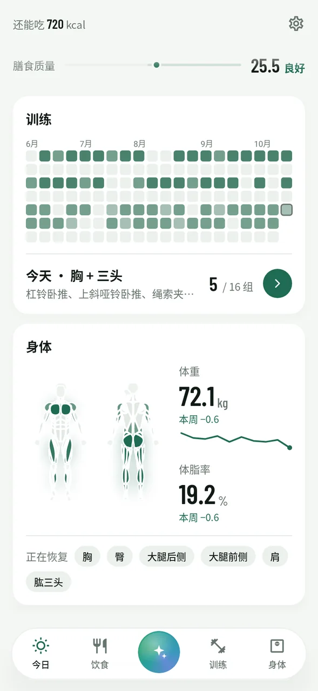
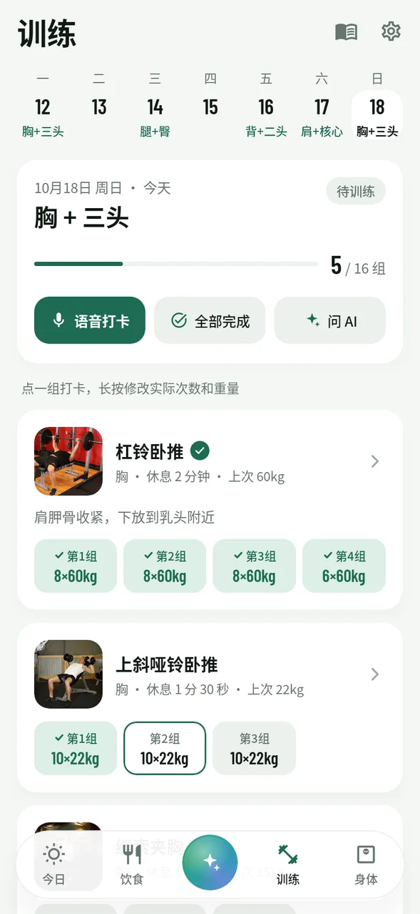

饮食、训练、身体数据放在一起，再交给一个什么都能帮你做的 AI。
记饮食、记体重、训练打卡、换动作、改计划、查数据，对 AI 说一句就行。改数据前会先问你，改错了随时撤销。
拍照、语音或打字都行。家常菜、外卖、"吃了半碗"这种模糊说法都能估，按菜拆成多条，每条都能自己改。
告诉 AI 目标、每周几练、有什么器材，计划精确到每组几次，按日历排好。点一下打卡，也能语音报数。
每天自动检查打卡。漏掉的训练由 AI 结合体重变化和完成情况重新排进后面几天，直接生效，不满意一键撤销。
肌肉恢复图告诉你哪里还没恢复，训练热力图记录每一次坚持。体重、体脂趋势带 7 天移动平均，支持从小米运动健康同步。
记录只存在你的手机上，没有账号、没有服务器。AI 用你自己的 Key，免费额度就够用。每天自动备份。
底部正中间的「问 AI」随叫随到。它能读写 App 里的所有数据，像私人教练加营养师一样回答问题。
一个「记一餐」入口：拍照、相册、语音、打字都在里面。按中国常见的碗、盘、外卖份量来估，还会把炒菜用油算进去。

训练计划按日历排好，完成、待练、漏练一眼就能分清。点一组打卡，长按改实际次数和重量，下次自动提示上次用的重量。

159 个常用动作，健身房、哑铃、徒手都有。每个动作都有起始和结束姿势的示意图，自动循环播放，点开能全屏放大看细节。

肌肉图按恢复情况着色：刚练完最深，随恢复慢慢变浅。恢复时间按部位大小、训练组数、是否练到力竭来算，还会参考年龄和前一天的饮食。

跟随系统自动切换深色模式。



不用注册账号，不用付费。
在 Releases 下载最新的 APK 安装。以后有新版本，App 里点一下就能更新。
设置 → AI 服务配置，选一个服务商填入 Key。推荐智谱，glm-4-flash 和 glm-4v-flash 都免费。支持任何 OpenAI 兼容接口。
填好身高体重和目标，让 AI 生成训练计划，然后每天记饮食、打卡就行，剩下的交给它。
App 免费、开源。AI 功能需要你自己的 API Key，智谱、Gemini 等服务都有免费额度，个人日常使用基本够用。
所有记录只保存在你的手机上，没有账号和服务器。只有你使用 AI 功能时，相关内容（比如你说的话、食物照片）才会发给你自己配置的 AI 服务。API Key 不会进入系统云备份。
照片估算一般有 20%～30% 的误差，所以每一条都能修改。对份量有把握时改一下克数，热量和营养素会自动按比例换算。常吃的食物校准一次后收藏起来，以后就准了。
每天检查前一天有没有打卡。漏掉的训练会由 AI 结合你的完成情况和体重变化，合理排进接下来两周，不会把两次大训练挤在相邻两天。已经完成的训练不会被改动。每次调整都记在「调整记录」里，可以一键撤销，也可以直接让 AI 改回去。
可以通过 Health Connect 同步体重、体脂和步数：在小米运动健康里打开 Health Connect 数据共享，再在薄肌来的设置里授权即可。如果步数显示不出来，设置页会告诉你卡在了哪一步。
暂时只有安卓版。iPhone 版需要另外开发和签名，在计划中。